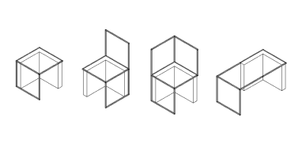

Space
terrace
- a modular system of urban equipment
- a modular system of urban equipment
Mentors: Zlatko Kapetanović, Nina Bačun
Industrial design 6
2022.
The system of urban equipment is designed for a specific location located behind the famous
modernist
Zagreb buildings Rockets, which is popularly called the Space Terrace. Through an extensive
analysis of the area's
dilapidated state and the diverse ways in which it's utilized by people, the users' needs were
identified.
Leveraging the existing concrete modules alongside metal structures, a versatile modular element
system was crafted.
This system empowers the Rockets' residents to fashion their personalized spaces for an array of
activities,
fostering socialization and more.
Rakete (the Rockets) also known as Richterovi Neboderi (the Richter
Skyscrapers)
Architects: Berislav Šerbetić, LjuboIveta, Vjenceslav Richter & OlgaKorenik (Centar 51 Design Group)
Completed: 1968 Formerly Yugoslavia
Architects: Berislav Šerbetić, LjuboIveta, Vjenceslav Richter & OlgaKorenik (Centar 51 Design Group)
Completed: 1968 Formerly Yugoslavia

The activities and behaviors of the people on the terrace were observed and documented
over a span of a few months.
People were contributing personal elements such as chairs and improvised tables to
fashion their own makeshift
"living rooms." They also repurposed existing concrete modules, rearranging them to
create inviting spaces for
socializing.Throughout the investigative process, the requirements of the
community were thoroughly
documented. These insights served as the foundation for designing a system that not only
accommodated current
communal behaviors but also facilitated the effortless construction of personalized
spaces for individuals.
designed state of the terrace

The versatile metal framework, available in four distinct shapes, accommodates various materials
and enables diverse
combinations. It empowers individuals to create their own interventions and configurations,
leveraging the unique
properties of each material.
different materials
perforated metal
metal
knit
wood
material combinations
First award at biennale of croatian design for student work at industrial design
The work was exhibited at Zagreb design week 2022. amongst finalists in the category of industrial design